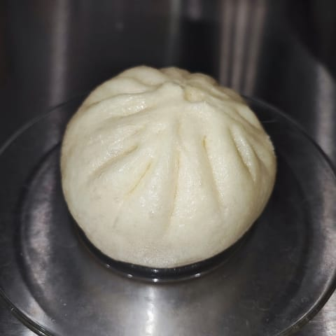
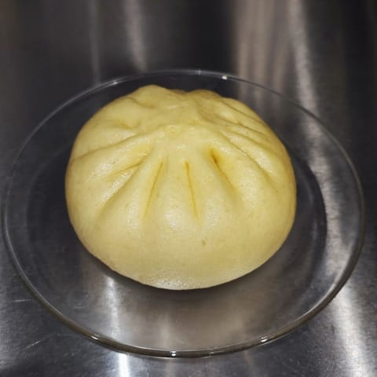
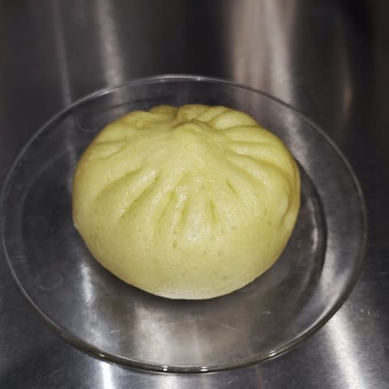
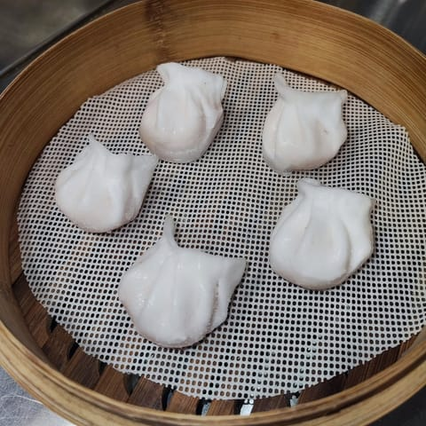
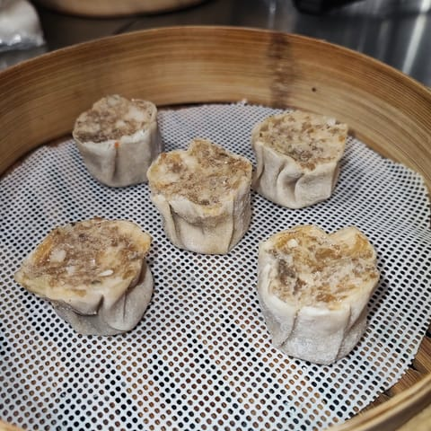
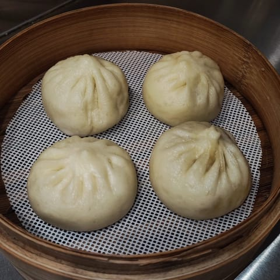
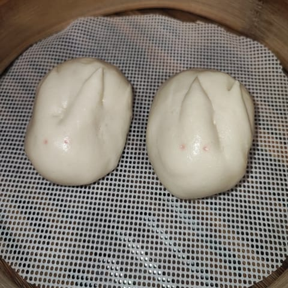
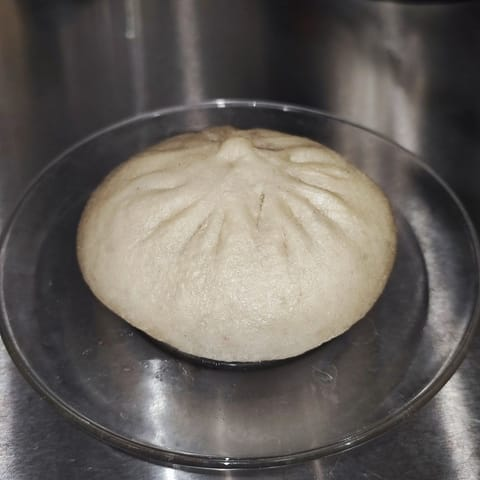

Bao e ravioli al vapore · Via della Palla 3, a due passi dal Duomo
Pronto e via.
Bao e ravioli al vapore da portare via, dalla finestra ad arco di Via della Palla, la traversa di Via Torino. Al maiale, al curry, ai funghi e verdure; e i bao dolci.
«Bao Buono di nome e di fatto»
4,8 su Google, 268 recensioni
Aperto tutti i giorni
La bandierina «BAO» scritta a mano è la loro, dalla foto del giorno dell'apertura.
Il menu
Una pila di vaporiere
Un piano per ogni cosa, come le vaporiere di bambù impilate sul banco. Tutto al vapore.
Bao al vapore

Maiale
Curry e manzo
Funghi e verdure
- Pollo e verdure
Ravioli al vapore, cinque per porzione

Cristallo coi gamberi
- Verdure miste: verza, carota e funghi
- Pollo
- Maiale
- Manzo, curry e cipolla
- Manzo
Siumai e xiaolongbao

Siumai di maiale e gamberi
Xiaolongbao col maiale, quattro
Bao dolci

Crema all'uovo, i coniglietti
Fagioli rossi
E da bere: tè alla pesca e al limone, bibite, acqua, birra. Le foto del menu sono le loro, di Deliveroo.
Le foto
Appena usciti dalla vaporiera
Dal loro Instagram, dalla loro scheda Google e dalle foto di clienti su Google.
La finestra
Si ordina, si aspetta un attimo, si porta via
Via della Palla è la traversa di Via Torino, a due passi dal Duomo. Bao Buono è una finestra ad arco, col logo nella lunetta: niente tavoli, tutto da asporto.
Tutti i giorni, 10:30–22
Orari dalla loro scheda Google (settembre 2026). Consegne con Deliveroo e Glovo.
Dicono
Soffici, caldi, e la cortesia
4,8 su Google, 268 recensioni
«Solo asporto!! Personalmente ho preso i bao alla carne, funghi e verdure e quello dolce coi fagioli rossi. […] Bao fatti a mano davanti a me dalla signora, in maniera sapiente e delicata. Consiglio tantissimo!!»
Elia Google, 11 mesi fa
«Questo piccolo negozio specializzato in bao e ravioli ha del sorprendente! Cortesia assolutamente genuina, ma soprattutto cibo delizioso, semplice, profumato. I bao sono soffici, umidi e ben farciti. Bisogna cercarlo, non deluderà. Io e mia figlia ormai, non possiamo più fare a meno di loro!»
Marilena Cucchi Google, un anno fa
«In giro per Milano, tra le strade di via Torino si presenta questa piccolo chiosco di bao e ravioli. Incuriosito, li ho voluti provare e sono davvero molto buoni! La carne di maiale all'interno non è per niente pesante o unta, l'involucro soffice e non si spezza. […]»
Elyas Drake Google, 2 anni fa
«Ravioli e Bao buonissimi freschi e appena fatto caldi, molto puliti e gentili!»
simona Lazzarini Google, un anno fa
«Ho provato i ravioli al manzo, il bao alle verdure e pollo e il bao al maiale. Tutto squisito, buona pure la salsina di soia 🥟 personale super gentile!»
Elisabetta Parisi Google, 2 anni fa
«Bao buono è davvero buono! Abbiamo provato per la prima volta i bao con carne di maiale, buonissimi! Sicuramente ci torneremo e le proprietarie erano davvero gentilissime. Consigliatissimo»
Benedetta Bruzzese Google, 3 anni fa
Dalle recensioni su Google, come sono state scritte. Anche la frase in alto viene da una recensione su Google. Tutte le recensioni su Google
Dove
La traversa di Via Torino
La mappa è di Google: aprendola, Google riceve il tuo indirizzo IP e può usare i suoi cookie.
- Dove
- Via della Palla 3, 20123 Milano, fra Via Torino e Missori
- In tram
- 3, fermata Via Torino – Via Palla, a circa 50 metri; 15, 16 e 24 a Missori
- In metro
- M3 Missori, a circa 300 metri; M1 e M3 Duomo, a circa 370
- Telefono
- 393 146 6878
Domande
Prima di passare
Ci si può sedere?
No: è solo asporto, si ordina e si ritira alla finestra.
Ci sono bao vegetariani?
Sì: il bao ai funghi e verdure, i ravioli di verdure miste e i due bao dolci.
A che ora aprite?
Tutti i giorni dalle 10:30 alle 22.
Quanto si aspetta?
Di solito pochi minuti; nelle ore di punta c'è un po' di fila.
Cosa sono i coniglietti?
I bao dolci alla crema all'uovo, a forma di coniglietto.
Fate le consegne?
Sì, con Deliveroo e Glovo.